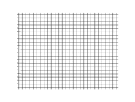
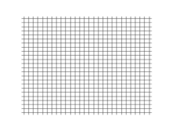

Une onde est la propagation d’une déformation. Plus particulièrement, une onde mécanique est une onde qui ne se déplace que dans des milieux matériels. Il n’y a donc pas de déplacement de matière.
Il existe 2 types d’ondes. Les ondes transversales, lorsque la déformation se déplace perpendiculairement à la direction du mouvement d'un point du milieu.
Les ondes longitudinales (son)la déformation se déplace parallélement à la direction du mouvement d'un point du milieu.
Une onde sonore est à 3 dimensions.
C’est à dire que le son peut se déplacer dans toutes les directions à partir de son point d’origine.
Célérité d'une onde : La célérité (ou vitesse de propagation) d'une onde parcourant une distance D en une durée DT est,
par définition, égale au rapport D / ΔT. On écrit :
V = D / ΔT est en (m/s) lorsque D est en (m) et ΔT en (s)
-Fr est la fréquence reçut
-Fe est la fréquence émise